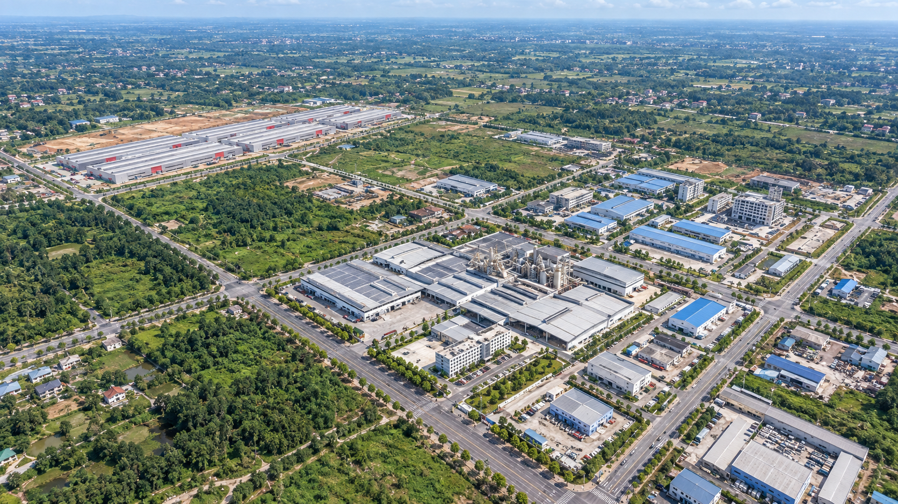
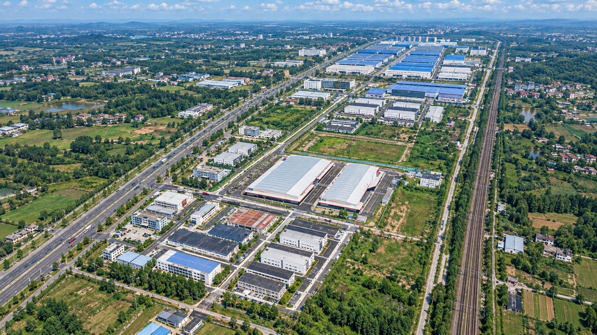
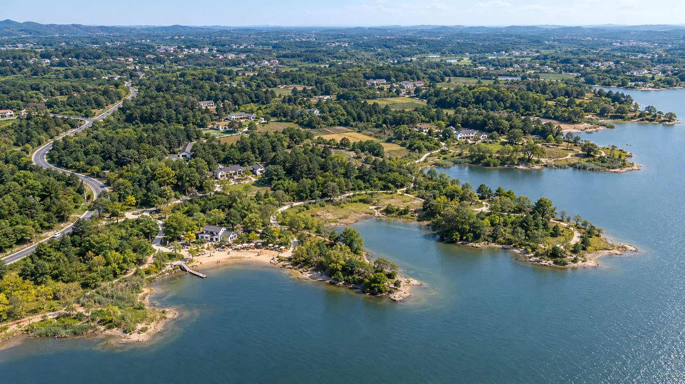
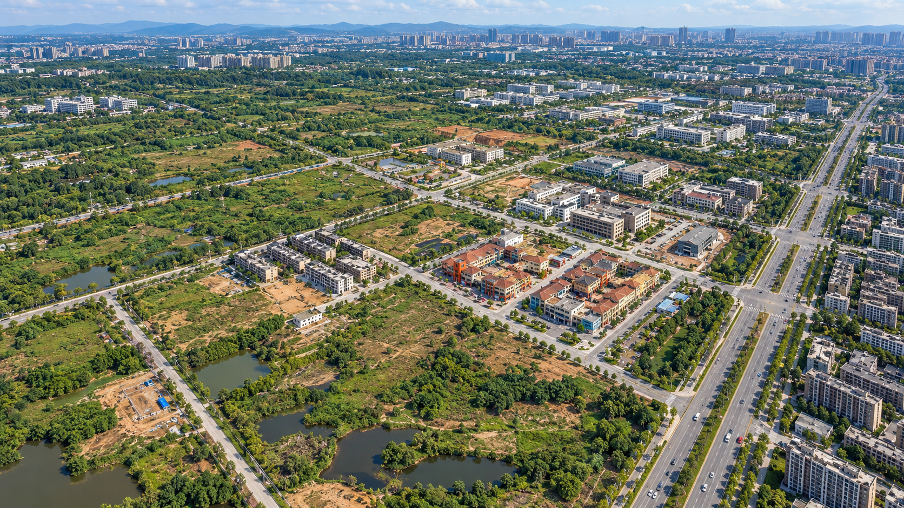

实拍与卫星参考合成的全景方向稿 · 2026-10-26 · 待确认
用于审阅整体构图、密度与材质方向。不是现状航拍或测绘成果；楼栋数量、位置、边界及补全细节待核。全部图片确认后，才作为后续建模的场景依据。
紧凑生产厂群、长跨厂房、工艺设施与预留地。

南北产业走廊、双厂房、院落楼群和北段蓝顶建筑。

湖湾、自然林地、支路和零散低层院落。环境照片不能证明规划总部楼群已经建成。

保留大片未开发地块与水塘，结合可见楼群、红瓦商业组团及周边城市背景。
